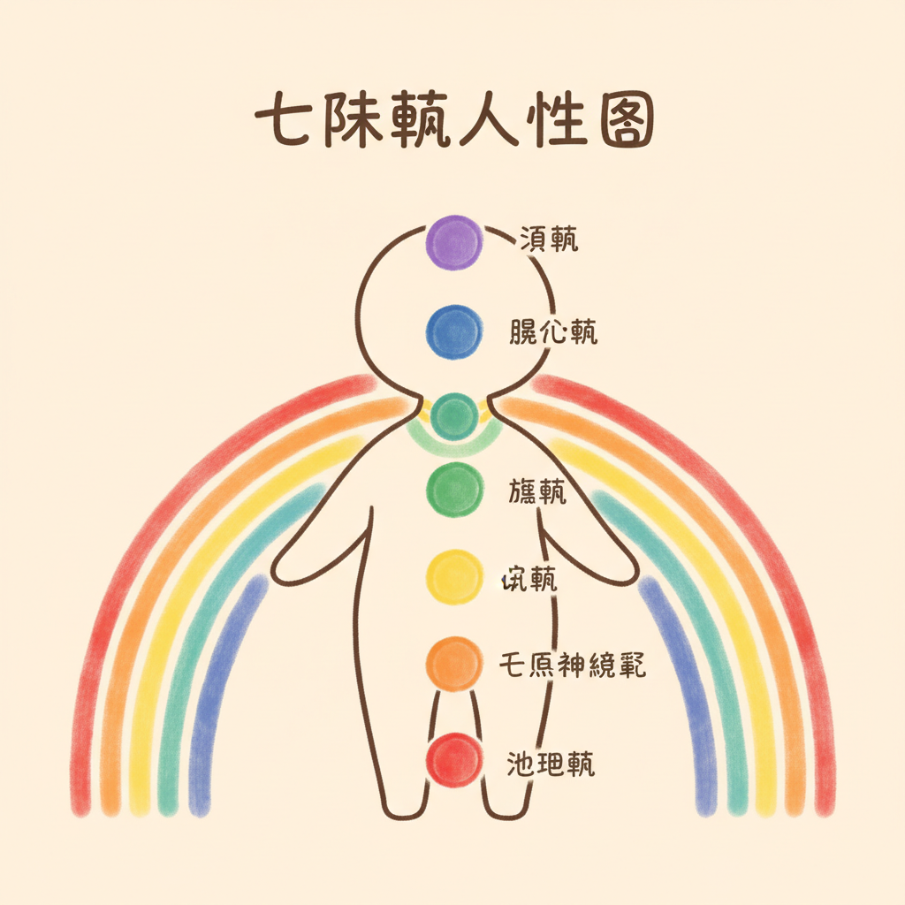

脉轮不是玄学，是身体地图

很多人聽到「脉轮」就觉得很玄。但如果你換个角度看，把脉轮想成身体里七个重要的内分泌腺体，事情就清楚了。
腎上腺分泌压力荷爾蒙，性腺管理生殖功能，甲状腺调节代谢速度，脑下垂体被称为「主腺体」因为它指揮所有其他荷爾蒙。這些腺体的位置，剛好和古老瑜伽传统描述的七个脉轮位置高度重叠。
不是巧合，是古人用身体经验观察到的东西，现代内分泌学给了它科学语言。Anodea Judith 在《Wheels of Life》里做了很好的整理：每一个脉轮对应一个腺体，每一个腺体影响一组荷爾蒙，每一组荷爾蒙牽动一种情绪和身体状态。
- 海底轮 Root → 腎上腺（皮质醇、腎上腺素）
- 臍轮 Sacral → 性腺（睪固酮、雌激素）
- 太阳神经叢 Solar Plexus → 胰腺（胰島素）
- 心轮 Heart → 胸腺（T 细胞、免疫力）
- 喉轮 Throat → 甲状腺（代谢、能量调节）
- 眉心轮 Third Eye → 脑下垂体（荷爾蒙总指揮）
- 顶轮 Crown → 松果体（褪黑激素、晝夜节律）
七脉轮个论
点开每一张卡片，看看那个区域的身体正在跟你说什麼。平衡的时候是什麼感觉，卡住的时候又長什麼样子。每个脉轮都附了对应的精油和一个你今天就能做的小练习。
海底轮 Muladhara
对应的人生课题
安全感、生存、紮根。最基本的那个问题：我在這个世界上站得稳吗？
内分泌连结
腎上腺分泌皮质醇（cortisol）和腎上腺素（adrenaline）。長期焦虑的人，這里幾乎都在超时工作。
平衡的感觉
- 脚踩在地上很稳
- 对基本生活有安全感
- 睡得著、吃得下
卡住的讯号
- 莫名焦虑、恐惧感
- 不安全感揮之不去
- 下背痛、腿部无力
- 囤积行为、过度节省
对应精油
- 岩兰草 Vetiver — 浓厚的泥土气味，像把根扎进土里
- 广藿香 Patchouli — 安定、沉稳，帮你回到身体里
- 雪松 Cedarwood — 树干的气味，稳如泰山
今天就能做的小练习
赤脚踩在地上 5 分钟。草地、泥土、木地板都行。如果手边有岩兰草精油，滴一滴在手心搓热，放在鼻子前面深呼吸。没有精油也没关係，光是想到泥土的味道，身体就会开始放松。
臍轮 Svadhisthana
对应的人生课题
创造力、情感、亲密关係。你允许自己感受吗？你敢不敢享受快乐？
内分泌连结
性腺分泌睪固酮（testosterone）和雌激素（estrogen），影响情绪起伏、创造冲动、和身体对愉悅的感受力。
平衡的感觉
- 情感可以自由流动
- 有创造力、灵感常来
- 享受身体的感受，不带罪惡感
卡住的讯号
- 罪惡感很重
- 情感压抑、什麼都悶著
- 性冷感或过度依赖
- 下腹悶脹、经期不顺
对应精油
- 甜橙 Sweet Orange — 明亮、温暖，像阳光洒在身上
- 依兰 Ylang Ylang — 花香里带一点野性，打开感官
- 檀香 Sandalwood — 温潤的木质香，让情绪有地方安放
今天就能做的小练习
泡一个热水澡，水温不要太烫，微微高于体温就好。如果有甜橙精油，滴 2 滴在浴缸里。没有浴缸？拿脸盆装热水泡脚也行。重点是让「水」碰到身体，臍轮对应的元素就是水。
太阳神经叢 Manipura
对应的人生课题
自信、个人力量、意志力。你相信自己吗？做决定的时候会不会一直回头看别人？
内分泌连结
胰腺（insulin）和腎上腺皮质协同工作。有没有注意过，压力大的时候特别想吃甜的？那就是這里在喊救命。
平衡的感觉
- 自信但不自大
- 有主见、敢做决定
- 消化顺暢、精力充沛
卡住的讯号
- 自卑、觉得自己不够好
- 控制欲太强或太没主见
- 胃痛、消化不良、脹气
- 容易被别人的情绪带走
对应精油
- 檸檬 Lemon — 清新、明亮，像把脑袋里的霧吹散
- 薑 Ginger — 暖胃也暖心，激发行动力
- 迷迭香 Rosemary — 提神醒脑，找回专注
今天就能做的小练习
坐下来，把双手放在肚子上。用鼻子吸气，让肚子像气球一样鼓起来，数到 4。嘴巴吐气，肚子慢慢收回来，数到 6。做 10 次。如果有檸檬，切一片放在旁边聞著就好。腹式呼吸直接按摩你的太阳神经叢。
心轮 Anahata
对应的人生课题
愛、慈悲、连结、原諒。你愛得起吗？你敢让别人靠近吗？
内分泌连结
胸腺制造 T 细胞，是免疫系统的核心。心碎的时候免疫力会下降，這不是比喻，是真的。胸腺在青春期后开始萎缩，但觉察和呼吸可以帮它维持活力。
平衡的感觉
- 有愛的能力，也能接受愛
- 同理心自然流露
- 能原諒，不是忘记，是放下
卡住的讯号
- 孤独感、觉得没人懂
- 嫉妒、佔有欲
- 胸悶、呼吸淺
- 反覆感冒、免疫力差
对应精油
- 玫瑰 Rose — 精油之后，打开心门最直接的钥匙
- 天竺葵 Geranium — 平衡情绪，温柔但不软弱
- 乳香 Frankincense — 深沉、安定，连结你和更大的东西
今天就能做的小练习
把双手交叠放在胸口。闭上眼睛。不需要想什麼，就感受手掌的温度传到胸腔。吸气的时候想像绿色的光在胸口扩散，吐气的时候让肩膀往下放松。做 2 分钟就好。很多人做到一半会想哭，那是正常的。
喉轮 Vishuddha
对应的人生课题
表达、溝通、真实。你说得出心里话吗？还是永远在配合别人的剧本？
内分泌连结
甲状腺控制全身的代谢速率。代谢太快人焦躁，太慢人无力。甲状腺问题的人，回头看常常发现有一段很長的时间都在压抑自己不能说的话。
平衡的感觉
- 说话誠实但不伤人
- 聲音有力、表达清晰
- 敢说不，也敢说我需要
卡住的讯号
- 话到嘴边就吞回去
- 反覆喉嚨痛、慢性咳嗽
- 甲状腺问题（亢进或低下）
- 常常觉得「算了不说了」
对应精油
- 尤加利 Eucalyptus — 清涼、通暢，像打开一扇窗
- 薄荷 Peppermint — 沁涼提神，让喉嚨感觉被释放
- 羅马洋甘菊 Roman Chamomile — 温柔地松开喉嚨的紧繃
今天就能做的小练习
哼歌。随便什麼歌，哼 3 分钟就好。哼歌的振动会直接按摩甲状腺区域。如果你不想哼歌，就「嗯，」一个長音，感受喉嚨的振动。洗澡的时候做最自然，没人会聽到。
眉心轮 Ajna
对应的人生课题
直觉、洞察、智慧。你有没有过一种感觉：明明没有证据，但就是知道某件事会发生？
内分泌连结
脑下垂体是内分泌系统的总指揮，被称为「master gland」。它指揮所有其他腺体什麼时候分泌、分泌多少。直觉清晰的人，荷爾蒙通常也比较平衡。
平衡的感觉
- 直觉敏銳、常常猜对
- 判断力好，不容易被带风向
- 想得远、看得深
卡住的讯号
- 迷惑、什麼都搞不清楚
- 偏头痛、眼睛疲劳
- 失眠、思绪停不下来
- 过度理性，不相信感觉
对应精油
- 乳香 Frankincense — 最古老的冥想用香，安定思绪
- 熏衣草 Lavender — 放松、助眠，让脑袋安静下来
- 快乐鼠尾草 Clary Sage — 打开内在视野，适合需要做重大决定的时候
今天就能做的小练习
闭上眼睛，把注意力集中在两眉之间的那个点。不需要用力盯，就轻轻地把意识放在那里。你可能会感觉到微微的脹或热，那很正常。保持 3 分钟。如果脑袋一直跑想法，就数呼吸：吸 1、吐 2、吸 3⋯⋯数到 10 再重来。
顶轮 Sahasrara
对应的人生课题
意義、连结、超越。你为什麼活著？你跟這个世界的关係是什麼？這不是哲学课考题，是每个人迟早都会问自己的问题。
内分泌连结
松果体分泌褪黑激素（melatonin），调节你的晝夜节律。2017 年諾贝爾生理医学奖就是頒给晝夜节律基因机制的研究。日出而作、日落而息不是农夫的事，是你身体每个细胞都在做的事。
平衡的感觉
- 心灵平静、有使命感
- 感觉自己跟什麼更大的东西连在一起
- 不害怕未知
卡住的讯号
- 空虚、不知道自己为什麼在這里
- 迷失方向、什麼都提不起勁
- 跟世界格格不入
- 日夜顛倒、作息混乱
对应精油
- 檀香 Sandalwood — 静定、深沉，幾千年来冥想都用它
- 橙花 Neroli — 珍贵的花香，带来内在的宁静
- 乳香 Frankincense — 连结古老智慧，适合安静独处的时刻
今天就能做的小练习
找一个安静的地方坐下来。不需要盘腿，椅子就行。闭上眼睛，把注意力放在头顶。想像有一束白光从头顶灌进来，经过眉心、喉嚨、心口，一路往下流到脚底。做 5 分钟。如果想法很多，没关係，让它們来，让它們走。
脉轮 × 精油 × 情绪 快速对照表
不想看長文的时候，這张表就够了。存起来当速查卡用。
| 脉轮 | 位置 | 腺体 | 人生课题 | 卡住的情绪 | 对应精油 |
|---|---|---|---|---|---|
| 海底轮 | 脊椎底部 | 腎上腺 | 安全感 | 恐惧、焦虑 | 岩兰草、广藿香、雪松 |
| 臍轮 | 下腹 | 性腺 | 创造力 | 罪惡感、压抑 | 甜橙、依兰、檀香 |
| 太阳神经叢 | 上腹 / 胃 | 胰腺 | 自信 | 自卑、无力 | 檸檬、薑、迷迭香 |
| 心轮 | 胸口 | 胸腺 | 愛与连结 | 孤独、嫉妒 | 玫瑰、天竺葵、乳香 |
| 喉轮 | 喉嚨 | 甲状腺 | 表达 | 压抑、沉默 | 尤加利、薄荷、洋甘菊 |
| 眉心轮 | 眉心 | 脑下垂体 | 直觉 | 迷惑、混乱 | 乳香、熏衣草、鼠尾草 |
| 顶轮 | 头顶 | 松果体 | 意義 | 空虚、迷失 | 檀香、橙花、乳香 |
脉轮自我检测
不是正式的心理测验，就是一个快速的身体掃描。勾选最近两周符合你状况的项目，看看哪些脉轮在喊你注意。
海底轮 — 安全感
臍轮 — 创造力与情感
太阳神经叢 — 自信
心轮 — 愛与连结
喉轮 — 表达
眉心轮 — 直觉
顶轮 — 意義感
脉轮失衡的身体信号
脉轮不是玄学概念，它們对应的是真实的内分泌腺体和神经叢。当某个区域長期处于压力状态，身体会用它自己的语言告訴你。以下整理的是臨床上常见的对应关係，不是说有這些症状就一定是某个脉轮的问题，而是身体在给你一个方向去觉察。
海底轮失衡信号
身体层面
- 下背痛，尤其是找不到明确原因的那种慢性痠痛
- 便秘或消化迟缓，腸道像罷工一样
- 腿无力、膝盖痠软，走路没有底气的感觉
- 免疫力下降，动不动就感冒
心理层面
- 常搬家、換工作，像一棵没有根的树
- 没有归属感，走到哪里都觉得自己是外人
- 对金钱有强烈的不安全感，即使存款够用还是焦虑
- 囤积物品，丟不掉东西，好像丟了就什麼都没有了
日常小练习
赤脚踩在草地或泥土上 5 分钟。没有草地的话，站在家里的地板上，把注意力放在脚底和地板接触的感觉。你的脚底有湧泉穴（腎经起点），接地的感觉会直接回饋给腎上腺。科学上，這叫「接地效应」（Earthing），研究显示接地可以降低皮质醇、改善睡眠品质。
臍轮失衡信号
身体层面
- 婦科问题：经期不规律、经痛、子宮肌瘤
- 性慾明显低落，或者反过来用性来填补空虚
- 下腹部经常脹气、悶痛
- 泌尿系统反覆感染
心理层面
- 创造力枯竭，做什麼都提不起勁，像电池没电
- 享受快乐的时候会有罪惡感，觉得自己「不应該」开心
- 情绪像水龙头，要嘛关太紧（压抑），要嘛关不住（爆发）
- 对自己的身体感到羞恥，不敢好好看镜子
日常小练习
泡一个温水澡（不是很烫的那种），水温大约 38-40 度。臍轮的元素是「水」，让身体被温水包围，本身就是在重新建立你和感受之间的连结。如果有甜橙精油，滴 2 滴在浴缸里，甜橙的香气会启动边缘系统的愉悅迴路，帮助你练习「允许自己感觉舒服」。
太阳神经叢失衡信号
身体层面
- 消化问题：胃脹气、胃酸过多、消化不良
- 血糖不稳定，餐后昏沉或莫名飢餓
- 腹部肌肉長期紧繃，像一直在防禦
- 慢性疲劳，明明睡够了还是没精神
心理层面
- 控制欲很强，什麼都想管，管不到就焦虑
- 或者反过来，習慣被控制，不敢说不，不敢有自己的意见
- 做决定的时候反覆猶豫，决定了又后悔
- 在意别人的评价到影响日常生活的程度
日常小练习
做 10 次腹式呼吸。把手放在肚臍上方，吸气的时候让肚子鼓起来顶住手掌，吐气的时候肚子慢慢凹下去。太阳神经叢就在這个区域，深呼吸的震动会直接刺激腹腔神经叢，启动副交感神经（休息和消化模式）。如果手边有檸檬，切一片聞一下，檸檬的清新感会帮你从「被控制」的感觉里跳出来。
心轮失衡信号
身体层面
- 胸悶、呼吸淺，像有一块石头压在胸口
- 免疫力差，反覆感染，过敏加重
- 上背痛，肩胛骨之间紧繃
- 血压不稳定（太高或太低都可能）
心理层面
- 无法原諒某个人或某件事，那份怨恨像石头一样卡在心里
- 害怕亲密关係，别人靠太近就想逃
- 过度付出，把所有人照顾好却忘了自己
- 觉得自己不值得被愛，或者愛一定会带来伤害
日常小练习
每天写 3 件让你感恩的事。不用是什麼偉大的事，「今天的咖啡很好喝」「阳光照进来的角度剛好」「有人帮我开门」都可以。感恩练习是目前正向心理学研究中证据最强的介入之一。2003 年 Emmons 和 McCullough 的研究显示，每周记录感恩事项的人在 10 周后幸福感显著提升，身体不适也减少了。心轮需要的是「打开」，感恩是最温和的打开方式。
喉轮失衡信号
身体层面
- 甲状腺功能异常（亢进或低下）
- 喉嚨常发炎、聲音沙啞、颈部僵硬
- 牙齿和牙齦问题反覆发作
- 肩颈痠痛，特别是靠近脖子的地方
心理层面
- 说不出真心话，明明不同意却说「好」
- 害怕冲突到会压抑自己所有的需求
- 或者反过来，说话很冲、很直，用攻击来掩盖脆弱
- 觉得「说了也没用」「没人在聽」
日常小练习
唱歌。认真地唱 5 分钟，在浴室、在车上、带著耳机跟著唱都可以。不需要唱得好聽，重点是让聲带震动、让喉嚨打开。唱歌会启动迷走神经（vagus nerve），迷走神经从脑干一路到腸道，是副交感神经的主干。唱歌 = 震动喉嚨 = 刺激迷走神经 = 身体切換到放松模式。很多人唱完会想哭，那代表有东西被松开了。
眉心轮失衡信号
身体层面
- 头痛，特别是前额和太阳穴的位置
- 失眠，脑子关不掉，像电脑开了 50 个分页
- 眼睛疲劳、视力模糊（排除眼疾后）
- 褪黑激素分泌异常，日夜节律混乱
心理层面
- 判断力变差，对「該怎麼做」完全没有头绪
- 过度理性，什麼都要数据，不信任任何感觉
- 或者反过来，过度感性，完全被情绪带著走
- 做惡夢，夢境混乱且让人不安
日常小练习
静坐 5 分钟，把注意力放在眉心（眉毛中间的位置）。不需要「看到什麼」或「感觉到什麼」，就是把注意力的焦点放在那个点上。眉心的位置对应松果体的投射区，松果体負責分泌褪黑激素，调控睡眠节律。静坐时专注眉心的练习在瑜伽传统中叫做「Trataka」，现代研究将其归类为专注力冥想（focused attention meditation），对减少心智游离和改善注意力有明确效果。
顶轮失衡信号
身体层面
- 光敏感、聲音敏感，对环境刺激过度反应
- 慢性疲劳（不是身体的累，是那种「存在本身很累」的感觉）
- 头顶偶爾会有压迫感或刺痛感
- 自律神经失调的各种症状
心理层面
- 迷失方向，不知道自己为什麼活著
- 存在焦虑，半夜会突然想到「活著有什麼意義」
- 与世隔绝的感觉，像隔著一层玻璃看世界
- 对任何事物都提不起興趣，连以前喜欢的事都不想做了
日常小练习
什麼都不做。认真地、刻意地，给自己 10 分钟什麼都不做。不看手机、不聽音乐、不想事情。就是坐著或躺著，让自己存在。顶轮的课题是「连结」，和比你更大的东西连结。那个东西不一定是宗教或灵性，可以是大自然、可以是音乐、可以是看著星空时那份莫名的感动。现代人的顶轮最常见的问题是「太忙了」，忙到没有空间去感受「活著」這件事本身。
7 天脉轮觉察挑战
一天对应一个脉轮，从海底轮开始往上走。每天只做一件小事，花不到 10 分钟。七天之后你不会「脉轮全开」（没有這种事），但你会比现在更清楚自己的身体在说什麼。
Day 1（周一）海底轮日
今天的练习
赤脚踩在地上 5 分钟。草地最好，公园的泥土也行，家里的木地板或磁砖也可以。重点是感受脚底和地面之间的接触，温度、纹理、压力。你会发现自己的呼吸自然变慢了。
如果有精油
岩兰草（Vetiver）。這支精油的气味很像潮湿的泥土，聞起来就是「根」的味道。滴一滴在手腕上，或者只是打开瓶盖聞一下。岩兰草的倍半萜烯成分含量很高，研究显示倍半萜烯类化合物有鎮静神经系统的作用。
Day 2（周二）臍轮日
今天的练习
泡一个温水澡，或者至少用温水泡脚 15 分钟。臍轮的元素是水，让身体被温水包围，允许自己感受「舒服」這件事。很多人连泡澡都会有罪惡感，「我应該去做正事」。今天的练习就是：不带罪惡感地让自己舒服。
如果有精油
甜橙（Sweet Orange）。滴 2 滴在浴缸或泡脚水里。甜橙含有 90% 以上的右旋檸檬烯（d-Limonene），這个成分在动物实验中显示有抗焦虑的效果，而且它的气味幾乎没有人不喜欢，甜甜的、暖暖的，像冬天剝开一颗橘子。
Day 3（周三）太阳神经叢日
今天的练习
做 10 次腹式呼吸。把一隻手放在肚臍上方、胃的位置。吸气 4 秒，让肚子鼓起来；憋住 2 秒；吐气 6 秒，让肚子慢慢凹下去。吐气比吸气長，這是启动副交感神经最简单的方式。10 次做完，你的胃应該会觉得比较松。
如果有精油
檸檬（Lemon）。不需要精油，切一片真的檸檬聞一下也行。檸檬的清新气味会让你的注意力从「别人怎麼看我」拉回到「我现在感觉怎麼样」。日本研究（Komori et al., 1995）发现檸檬精油的香气对情绪有正向调节效果，可以减少压力荷爾蒙的分泌。
Day 4（周四）心轮日
今天的练习
写下 3 件今天让你感恩的事。可以写在手机備忘录里，也可以写在纸上。不要想太久，第一个跳进脑海的就写下来。「早餐很好吃」「有人让座给我」「窗外的云很漂亮」，越具体越好，越小的事越有效。
如果有精油
玫瑰（Rose）。真正的大马士革玫瑰精油很贵，用玫瑰天竺葵（Rose Geranium）也有类似的效果。或者更简单，聞一朵真的玫瑰花。玫瑰的香气对心血管系统有鎮静作用，2009 年伊朗的一项研究显示，吸入玫瑰精油可以降低焦虑感和皮质醇水平。
Day 5（周五）喉轮日
今天的练习
唱歌或大聲朗读 5 分钟。在浴室唱、在车上唱、带著耳机唱，唱什麼都可以。重点不是唱得好聽，是让聲带震动，让喉嚨打开。如果你平常是那种「有话都吞回去」的人，這个练习一开始会觉得很奇怪，但做完之后你会注意到脖子松了，呼吸也变深了。
如果有精油
尤加利（Eucalyptus）。聞一下就好，那个清涼感会让你的喉嚨和鼻腔都打开。尤加利的桉油醇（1,8-Cineole）成分佔 60-80%，对上呼吸道有直接的舒缓效果，這也是为什麼很多喉糖和感冒药膏都含有這个成分。
Day 6（周六）眉心轮日
今天的练习
静坐 5 分钟，闭上眼睛，把注意力放在两眉之间。不需要「看到光」或「感觉到震动」，那些都是加分项不是必要条件。就是安静地把注意力放在那个点上，像用意识的手指轻轻碰著那个位置。脑袋会跑出各种念头，让它跑，不用追，也不用趕，它自己会安静下来。
如果有精油
乳香（Frankincense）。如果你只能拥有一支精油，很多芳疗师会推薦這支。乳香含有乙酸乳香脂（incensole acetate），2008 年发表在 FASEB Journal 的研究显示，這个化合物能启动大脑中与情绪和焦虑相关的 TRPV3 离子通道，可能是乳香在冥想中被使用数千年的科学基础。
Day 7（周日）顶轮日
今天的练习
什麼都不做。這聽起来很简单，但其实是七天里面最难的一天。找 10-15 分钟，关掉手机（或者至少开飞航模式），不聽音乐、不看书、不想事情。就是坐著或躺著，让自己「在」。你可能会觉得无聊、焦躁、手癢想拿手机，那些感觉都是正常的。让它們在，不要对抗。顶轮的功课是「存在本身就够了」。你不需要一直做什麼来证明自己活著。
如果有精油
不用精油。今天的练习是「什麼都不加」。如果你真的想要一个气味陪伴，打开窗户，聞外面的空气就好。风带来的气味每次都不一样，那就是顶轮的本质：你和這个世界之间的连结，不需要任何媒介。
认知芳疗 × 脉轮
這里要说的事可能会顛覆你对精油的认知。你不需要真的拿一瓶精油在手上，也能启动脉轮觉察。
想到薄荷，嘴里是不是有沁涼的感觉？想到酸梅，口水是不是自动出来了？這就是认知芳疗的核心，鼻子在聞，但大脑在记忆。嗅觉记忆一旦建立，光是「想到」那个气味，对应的神经迴路就已经启动了。
所以你可以這样做：
闭上眼睛。想像一道绿色的光在你的胸口。现在，想起玫瑰的味道。不需要真的聞到，就让那个记忆浮起来。感觉到了吗？那是你的心轮在醒过来。
這也是为什麼馥灵之钥的牌卡系统可以在线上运作。牌卡触发的是气味记忆和情绪连结，不是物理上的分子扩散。觉察发生在你的意识里，不在你的鼻子上。
有精油当然更好。没有也完全没问题。重要的是你愿不愿意花 3 分钟，把注意力放回自己身上。